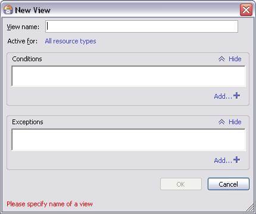
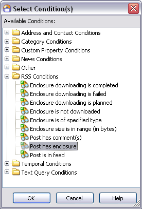
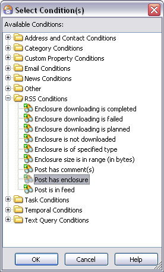
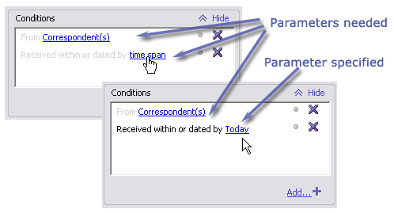
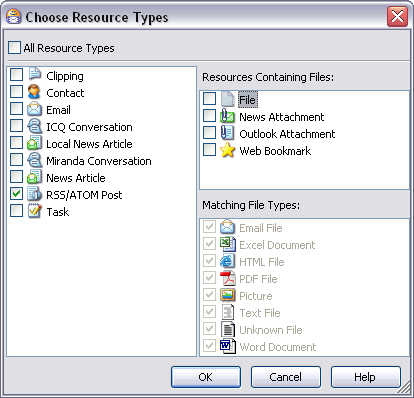
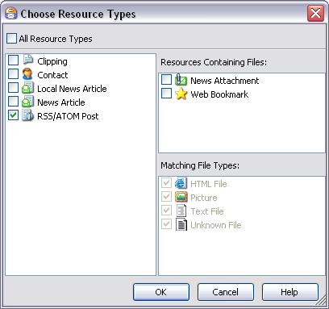
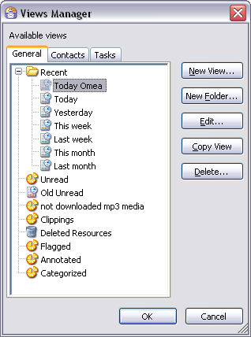
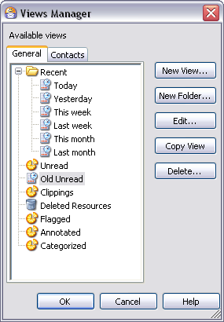

Organizing Using Views
Views are both a means of organizing resources and of accessing resources. This topic discusses both aspects. First we’ll look at how Views enable you to access resources in unique ways. Then we’ll discuss how you can create views to organize your resources.
The Default Views
Views appear in the Views and Categories pane on the left-hand side of the main window. Views are essentially a subset of all the electronic resources you manage using Omea ReaderOmea Pro. (For information on specifying which resources are available and accessible, see Indexing Your Computer’s Resources.) You can understand how Views work trying Omea Reader’sOmea’s default pre-defined Views, so let’s look at those first.
The "Recent" Views
The Recent folder contains several pre-defined Views that show only those resources that fall into a particular time frame. When you click on one of these views, only those resources matching the time criteria of the View appear in the Resources List. For example, if you click Today, only the resources matching the selection criteria of the view "Today" appear in the Resources List. If no resources match the criteria, the Resources List is empty. The names of the Views in the Recent folder essentially describe what resources they show:
- Today: Selects and shows only resources dated with the current date
- Yesterday: Selects and shows only resources dated with yesterday’s date
- This Week: Selects and shows only resources dated within the current week
- Last Week: Selects and shows only resources dated within the previous week
- This Month: Selects and shows only resources dated within the current month
- Last Month: Selects and shows only resources dated within the previous month
As you can see, these Views (and all Views) provide quick viewing of and access to some particular subset of all your resources.
The "Recent" Views show the Recent View icon () and are available for all types of resources except Contacts and Tasks.
If the name of a View appears in bold, it means the View contains unread resources, and a count of unread items appears to the right of the View's name. For example:
Last week (5)
The "Flagged" View
Omea ReaderOmea Pro provides the possibility to mark resources with one of several colors of "flags". It’s essentially the same capability you may have experienced in Microsoft Outlook®, except that Omea ReaderOmea Pro provides several colors of flags which you can use as you see fit.
- The "Flagged" View contains only resources
that have been marked with a flag, including the Completed flag (
 ).
). - The "Flagged" View shows the View icon () and is available for all types of resources
The "Unread" View
- This View contains only resources that have not been marked as read. Consequently, it always appears in bold type and shows a count of unread items.
- The "Unread" View shows the View icon () and is available for all types of resources except Contacts and Tasks.
The "Annotated" View
- This view contains only resources that have been annotated.
- The "Annotated" View shows the View icon () and is available for all types of resources.
The "Clippings" View
- This view contains only Clippings you have created.
- The "Clippings" View shows the View icon () and is available for all types of resources except Contacts and Tasks.
Deleted Resources View
- This view contains the resources which have been deleted.
- The "Deleted Resources" View shows the View icon () and is available for all types of resources.
The resources you delete in Omea using the Delete command of the pop-up menu or Del(ete) button on the toolbar are now moved to the Deleted Resources. You can later access the deleted items in this view.
If you decide that you still need the items which are moved into your "Omea's Recycle Bin", you can restore them. To do so, right-click the item in the Deleted Resources view and select Undelete on the shortcut menu.
Categories as Views
As discussed in Organizing Using Categories, Categories are the main tool for organizing your resources in Omea. They enable you to create your own simple or complex filing system. However, once you have created a Category and filed some resources in it, it works very much like a View: when you click on it, you see only the resources that it contains.
For example, suppose you create an e-mail category "My Boss" in which you file all e-mail messages to/from your boss. Your My Boss Category is part of your filing system, your organizational scheme. But it is also a View because when you click on it, your Resources List contains only e-mail messages to/from your boss. In essence, your My Boss Category is also a View that contains, and provides quick access to all of your e-mail communications with your boss. You could automate this kind of filing using Rules.
For example, a journalist might create a web page category "Feature Story Research" in which she files web pages that have information she want to refer to or quote in an article she is working on. This Feature Story Research Category is part her filing system, her organizational scheme. But it is also a View because when she clicks on it, the Resources List contains only those web pages pertaining to the research for her story. In essence, the Category is also a View that contains, and provides quick access to all of the on-line information needed to write the story.
Unlike Categories, Views are not tied to any particular Workspace. A View you create while working in one Workspace is available in all Workspaces, including new ones you may create after creating the View.
Creating Custom Views — Smart Ways to Organize Your Work
As Categories provide the way to organize what you have, Views provide a way to organize how you work. Views enable you to group related resources together, or isolate some resource(s) according to some criteria. You can create Views that support almost any way you might need to view and access some subset of your resources. You can create new custom Views either manually, or from Search results. You can also group related views in folders that you create in the Views and Categories pane.
Views are automatically aware of the types of resources they contain, and so they only show up when you work with the same resource types. For example, suppose you create a View "Boss Today" that contains only e-mail messages and ICQ conversations. It will only be visible when you are working in the E-mail tab or the IM tab in the main window.
Views are automatically aware of the types of resources they contain, and so they only show up when you work with the same resource types. For example, suppose you create a View "News Today" that contains only newsgroup articles and RSS/Atom feed postings. It will only be visible when you are working in the News tab or the Feeds tab in the main window.
Creating a New View Manually
Creating a new View involved these basic steps:
- Specify the resource type(s) that the View will include.
- Specify Conditions (some criteria that must be met in order for the View to show some resources in it). For example, a View might specify that some specific resource must appear in it.
- Optionally specify any Exceptions to the Condition(s).
To create a new view:
- If the new view will be in a Folder, either select the folder or create it. Otherwise, just click white space in the Views and Categories pane to give it focus.
- Right-click and choose New view
on the context menu.
The New View dialog appears.
This dialog may look differently. For example, the Exceptions or Conditions are may be collapsed if you used the Hide button before or they can be wider if you expand the dialog.
- Type a name for the new View in the View name edit box. Try to make it relevant to what the view will show.
- If you want the View to contain all types of resources, skip to step 6 below.
- If you want to limit the new view to certain types of resources, click the default All resources types link, and in the Choose Resource Types dialog (see figure below), check the type(s) of resource(s) the new View should show.
- Click the Add… button to show the Select Condition(s) dialog. Expand
folders in this dialog as needed to show the condition(s) you want to
include, select it/them, and click OK.
Select Conditions dialog
The dialog shows only conditions applicable to the type(s) of resource(s) specified for the new View.
You can select multiple conditions in the dialog. Use Shift + click to select multiple conditions that are contiguous ( i.e., border on each other). Use Ctrl + click to select non-contiguous conditions. Multiple conditions have an inclusive ("AND") relationship to each other.
- Many conditions require you to specify addition information
or parameters. Such conditions show link-style text. Click this
text to launch a dialog that will enable you to specify the necessary
information.
 - If there are any exceptions to the conditions you have defined so far, navigate to the Exceptions field, click the Add… button, and select the exceptions in the same way you selected conditions in step 6. If any exceptions require parameters (additional information), specify these in the same was as for conditions in step 7.
- Click OK in the New View dialog to create the new View.


Choose Resource Types dialog
New View Example
Suppose you want to create a View that will always show your ICQ conversations with Jan for the current date, except the conversations you have about meeting after work for a beer. Here's how you would do it.
Specifying the conditions
- Choose New View from the Views and Categories pane’s context menu.
- Type in ICQ-Jan-Today in the View name field.
- Click All resource types. Then, check the box next to ICQ Conversations and click OK.
- In the Conditions field, click the Add… button, then expand Address Conditions and Temporal Conditions.
- Holding down the Ctrl key, click From Correspondent(s), followed by Received within or dated by time span.
- Click OK to return to the New View dialog.
Specifying the condition parameters
- In the Conditions field, click Correspondents, then select Jan (or whomever) from the dialog by checking the box next to the person’s name. Click OK.
- Back in the New View dialog, click time span, check For, and click OK.
- Click All resource types. Then, check the box next to ICQ Conversations and click OK.
- Click the Add… button, then expand Address Conditions and Temporal Conditions.
- Holding down the Ctrl key, click From Correspondent(s), followed by Received within or dated by time span.
Specifying the exceptions
Specifying exceptions procedure is almost the same as specifying exceptions.
- Navigate to the Exceptions area and click the Add… button.
- Expand Text Query Conditions and click on Matching query in the body.
Specifying the exception parameters
- In the Exceptions area, click the word query.
- In the pop-up dialog, type the word beer, then click OK.
Reviewing the View criteria
You can now review the criteria for the resources the View will show. The criteria will read rather like a description. In this case, if you take the Conditions tab followed by the Exceptions tab, the View criteria comes out something like this:
View named ICQ-Jan-Today active
for ICQ Conversation
from Jan
received within or dated by
Today
except with
beer in the message body
New View Example
Suppose you want to create a View that will always show your newsgroup articles posted by "MrFabulus" for the current date, except any articles that mention "beer". Here's how you would do it.
Specifying the conditions
- Choose New View from the Views and Categories pane’s context menu.
- Type in News-MrFabulus-Today in the View name field.
- Click All resource types. Then, check the box next to News Article and click OK.
- In the Conditions area, click the Add button, then expand Address Conditions and Temporal Conditions.
- Holding down the Ctrl key, click From Correspondent(s), followed by Received within or dated by time span.
Specifying the condition parameters
- In the Conditions area, click Correspondents, then locate MrFabulus (or whomever) from the dialog by checking the box next to the person’s name. You can search for the contact if necessary. When you have located and checked the Contact, click OK.
- Back in the New View dialog, click time span. Then, in the Edit Time Span dialog, check Today and click OK.
Specifying the exceptions
- Navigate to the Exceptions area and click the Add… button.
- Expand Text Query Conditions. Hold down Shift and click on Matching query in the body, followed by Matching query in the subject/header .
Specifying the exception parameters
- In the Exceptions area, click the word query in the first Exception (query in the body).
- In the pop-up dialog, type the word beer, then click OK.
- Now click the word query in the second exception (query in subject/header).
- In the pop-up dialog, type the word beer again, then click OK.
Reviewing the View criteria
You can now review the criteria for the resources the View will show. The criteria will read rather like a description. In this case, if you take the Conditions tab followed by the Exceptions tab, the View criteria comes out something like this:
View named News-MrFabulus-Today
active for News articles
fromMrFabulus
received within or dated by
Today
except with beer
in the body or the subject/header
Creating a View from Search Results
The results returned by any search are essentially a View because they represent a subset of your resources. Sometimes you may find the results of some search so useful that you want to be able to quickly access the same set of resources quickly in the future. You can easily convert such search results into a View.
To convert a search result to a View:
- Locate the search result (icon: ) in the Views and Categories pane and select it.
- Right-click and choose Convert to View on the context menu. In-place rename editing is triggered.
- Type in a name for the view and press Enter.
Converting View to Action Rule
You can easily create an action rule from the Views which you already have in Omea. This Create Action Rule from View command will allow you to use the selected View as a pattern for the Action Rules which you can find really useful in your everyday work with Omea.
Right-click the desired View in the Views and Categories pane and select Create Action Rule from View. In the Edit Action Rule form which opens, specify the rule name, resource type, exceptions and actions and save the resulting rule. You can later access and edit this rule in the Manage Rules form.
Refreshing Selected View
You can refresh the selected View in the Views and Categories pane if you select the View or the View Folder and either press F5 or from the View menu, select Refresh. The contents of the View will be updated.
Modifying an Existing View
You can modify any View... both the pre-defined Views that come with Omea, and the Views you create yourself. You can modify as little as the name. Or can make the view show more or fewer resource, and/or include other types of resources. You have the full range of flexibility that you have when creating a new view, and the techniques for naming and defining the content is the same. The only difference is how you access the dialog to edit an existing view.
To edit an existing View:
- Select it in the Views and Categories pane.
- Right-click and choose Edit view on the context menu.
- Make the desired changes and click OK.
Removing an Existing View
You can remove any View, both the custom Views and you create, and the pre-defined views that come with Omea ReaderOmea Pro. To remove a view, just select it in the Views and Categories pane and press Del(ete).
When you remove a View, no resources are deleted from your computer. You can still search for them, access them from any Categories or Views that may include them, or create new Views to show and access them.
Restoring the Original Pre-defined Views
If you change or remove any of the original pre-defined Views that come the product, you can restore them.
To restore the original pre-defined Views:
- On the Main Menu, choose Tools | Restore Default Views
Grouping Views in Folders
As you begin creating more and more Views, you may find you need to organize and categorize them. You can create View Folders in the Views and Categories pane for this purpose. You can:
- Create new View Folders and View Sub-folders
- Create new Views in any View Folder
- Move any existing View into any View Folder
Creating new View Folders
To create a new View Folder:
- In the Views and Categories pane, right click white space or an existing View Folder and choose New View Folder on the context menu or in the Views Manager click New Folder.
- Type a name for the folder in the in-place edit box and press Enter.
Creating Views in View Folders
To create a new View in a View Folder:
- In the Views and Categories pane, right click an existing View Folder and choose New View on the context menu or in the Views Manager click New View.
- Define the new View as described in Creating a New View.
Using the Views Manager
The Views Manager enables you to see all of the Views currently defined in your Omea ReaderOmea Pro installation and perform all View management tasks: creating, editing, organizing, etc.
 The Views Manager dialog provides central control of all Views
To launch the Views Manager:
- On the Main menu, choose Tools | Views Manager or...
- Right-click any item in the Views and Categories pane and choose Views Manager on the context menu.